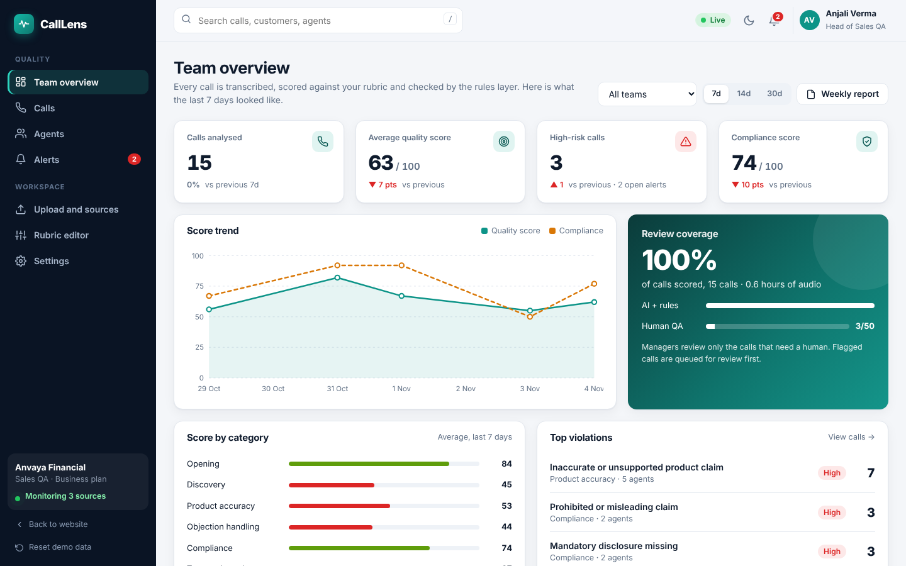
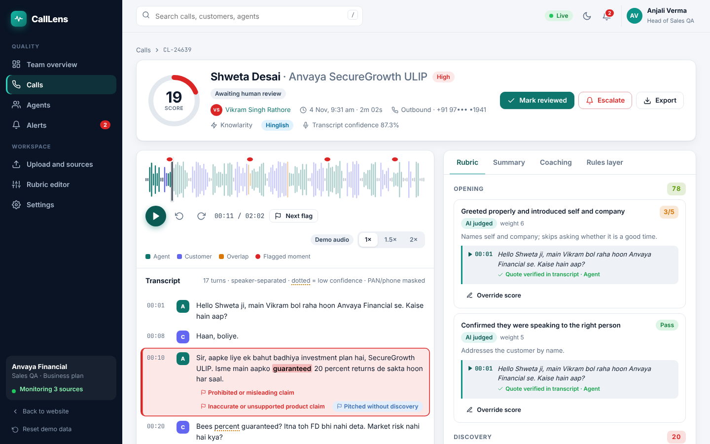
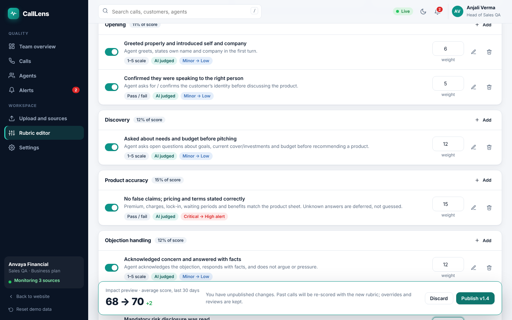

~2%
of calls get reviewed
A manager can listen to a handful of recordings a week. Everything else is invisible.
CallLens transcribes each call, scores it against your own rubric with a quoted line as proof, flags compliance risks with the exact timestamp, and alerts your manager on Slack before the customer complains.
A manager can listen to a handful of recordings a week. Everything else is invisible.
Mis-selling, missed disclosures and rude behaviour usually surface when a customer escalates.
Without data across all calls, feedback depends on which three calls a manager happened to hear.
An LLM judges nuance such as tone and objection handling. A deterministic rules layer checks what must be said and what must never be said. Together they are consistent and easy to defend.
Every criterion quotes the supporting line and timestamp. A score without evidence is rejected, so managers never have to take the AI’s word for it. Try it below.
Recording folder, Exotel, Knowlarity, Ozonetel, Twilio or a manual upload. Calls are processed as they end.
Speaker-separated transcripts with cleaned-up numbers and names, plus a confidence indicator and reviewer corrections.
Pass/fail or 1–5 per criterion, weighted by your priorities. Compare the impact before publishing any change.
Serious violations go to Slack or email with the flagged quote and a link that opens the audio at that second.
Per-call feedback with suggested phrasing, agent trends, strongest and weakest categories, and team leaderboards.
Every override, review and rubric change is logged. Export CSV or a weekly PDF for compliance.



Start from a template for your industry and edit every criterion, weight and phrase list from the admin screen. No engineers involved.
Adjust the numbers to match your floor. The estimate shows how much human review time it would take to reach full coverage manually.
Assumptions: 22 working days a month; a manual review takes the call length plus 4 minutes of scoring and notes; a QA analyst has about 140 productive hours a month; with CallLens, humans review roughly 12% of calls, the ones that are flagged. Indicative CallLens cost uses the Growth price below.
Checks that agents give the recording notice, and flags calls where sensitive data is collected or opt-outs are ignored.
Audio and transcripts are encrypted at rest and in transit and stored in an Indian region.
Separate retention periods for audio and transcripts, PAN and phone masking, and customer-level erasure.
Scores are a first-pass review. Serious flags need manager confirmation, and every override is logged.
Your legal team should confirm consent wording and retention against the data-protection and sector rules that apply to you.
Indicative pricing for pilots. Final pricing depends on call volume, integrations and rubric setup.
For teams up to 25 agents getting started with QA automation.
For sales floors that need live alerts and a custom rubric.
For regulated teams that need audit-grade reporting.
Optional one-time setup fee for custom rubrics and integrations. Per-call-minute billing is available for variable volumes.
Accuracy varies by provider and audio quality, so we benchmark engines on your own recordings during the pilot. Every transcript shows a confidence indicator, low-confidence words are underlined, and reviewers can correct a line, which instantly re-runs the rules layer.
Each score must quote a transcript line, otherwise it is rejected. Managers can override any score with a reason, and the original result stays in the audit trail. We position CallLens as a first-pass reviewer; disciplinary decisions stay with people.
An LLM is good at nuance such as tone. Rules are better at facts, such as whether the disclosure sentence was said at all, or how long each person spoke. Using both makes results consistent and credible.
Yes. Client admins add and edit criteria, weights, severities and phrase lists in the rubric editor. You see the impact on the last 30 days before publishing.
Exotel, Knowlarity, Ozonetel and Twilio, S3-compatible or SFTP recording folders, and manual upload. Alerts go to Slack and email.
This site and the workspace behind “Open live demo” run entirely in your browser with bundled sample calls and scripted transcripts, so you can explore without sending any audio anywhere.
In a 20-minute walkthrough we run a few of your own calls through the pipeline, show the evidence behind each score, and agree what a pilot would measure.